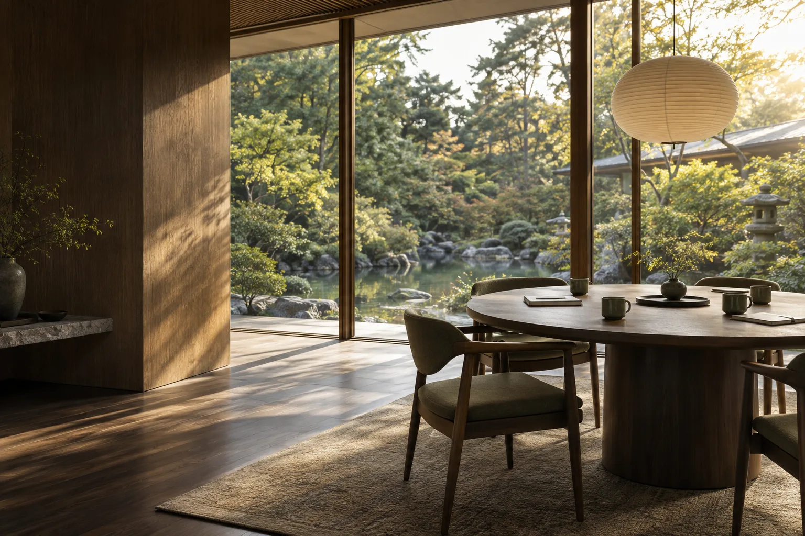

SAMPLE
現場から、経営の問いを持ち帰る。

提案用の仮記事 / 実際の開催報告ではありません
ひとつの問いを持って、参加する。
何を知りたいのか。今の自分にどんな視点が必要なのか。活動の前に関心を言葉にすることで、当日の学びを自分の課題へつなげます。
気づきを、次の行動へ。
本制作では、開催概要、当日の写真、印象的だった場面、次回案内を整理して掲載します。運営担当者が分類を選んで投稿すると、一覧とトップページに反映されるCMSを想定しています。
活動について相談する ↗